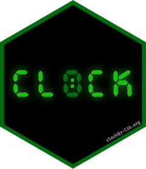

| clock-package {clock} | R Documentation |

Provides a comprehensive library for date-time manipulations using a new family of orthogonal date-time classes (durations, time points, zoned-times, and calendars) that partition responsibilities so that the complexities of time zones are only considered when they are really needed. Capabilities include: date-time parsing, formatting, arithmetic, extraction and updating of components, and rounding.
Maintainer: Davis Vaughan davis@rstudio.com
Other contributors:
RStudio [copyright holder, funder]
Useful links:
Report bugs at https://github.com/r-lib/clock/issues